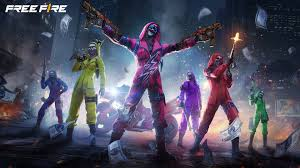
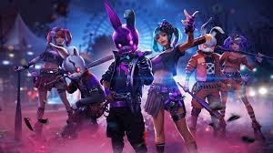
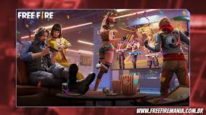
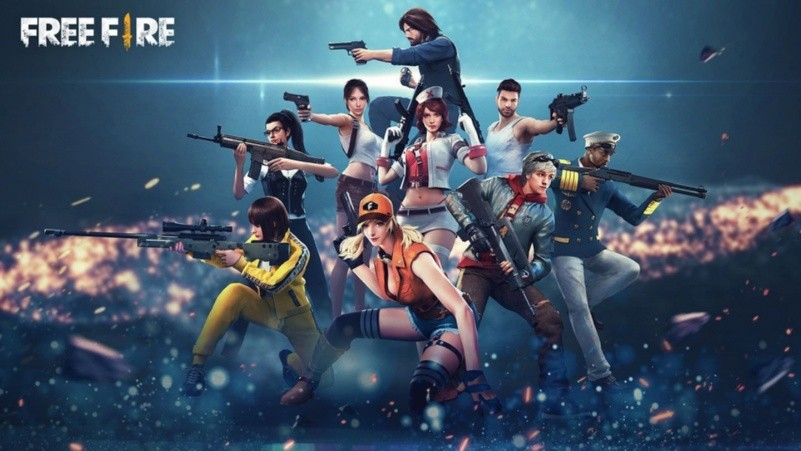
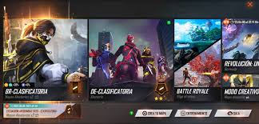

Inicio
Free Fire es un popular juego de Battle Royale desarrollado por Garena. En esta página encontrarás información, imágenes y videos sobre el juego.
Desarrollador

Hola, soy [Gabriel Ernesto Arévalo Pérez], el desarrollador de esta página. Soy estudiante del Instituto Nacional De Antiguo Cuscatlan y apasionado por los videojuegos.
Imágenes de Free Fire
¿QUE ES FREE FIRE?
Garena Free Fire también conocido anteriormente como Free Fire Battlegrounds o simplemente Free Fire, es un videojuego battle royale de 2017, desarrollado por 111Dots Studio y publicado por Garena para Android e IOS. Se convirtió en el juego móvil más descargado a nivel global en 2019. Debido a su popularidad, el juego recibió el premio al «mejor juego de votación popular» por parte de Google Play Store en 2019. En mayo de 2020, Free Fire ha establecido un récord con más de 80 millones de usuarios activos diarios en todo el mundo. 
¿COMO ES LA JUGABILIDAD?
El juego consiste en que hasta 50 jugadores caen desde un paracaídas en una isla o diversos lugares en busca de armas y equipamiento para matar a los demás jugadores. Cuando los jugadores se unen a una partida, entran en un avión que sobrevuela cada isla o lugar, mientras el avión sobrevuela el área. Los jugadores pueden saltar donde quieran, lo que les permite elegir un lugar estratégico para aterrizar lejos de los enemigos. Después de aterrizar, los jugadores deben ir en busca de armas y objetos útiles. 
NUMERO DE DESCARGAS E INGRESOS
Garena Free Fire es uno de los juegos de battle royale móvil más populares del mundo. Free Fire fue el segundo juego más descargado en Google Play Store en el cuarto trimestre de 2018, y fue el cuarto juego más descargado en el mundo en 2018 en la App Store y en Google Play Store juntos. El título obtuvo aproximadamente 182 millones de descargas en 2018, convirtiéndose en el segundo juego de battle royale móvil más descargado (por encima de Fortnite y detrás de PUBG Mobile), y recaudó aproximadamente 19,3 millones de dólares en ingresos mensuales hasta diciembre de 2018, convirtiéndose en un éxito financiero significativo para Garena. 
¿COMO AFECTA FREE FIRE A LOS ADOLECENTES?
El presente trabajo muestra como en la actualidad se ve una gran evolución de ciertos videos juegos que pueden afectar la conducta tanto de manera positiva como negativa a los adolescentes; por lo que esta investigación busca describir cómo influye el video juego en línea Free Fire en la conducta de los adolescentes. Para el efecto se aplicó el enfoque cualitativo dado el necesario proceso de obtener información de primera; para ello la técnica que se utilizó fue la entrevista, a cuatro docentes de la Universidad Técnica de Manabí, de la carrera de Psicología. 
¿COMO A LLEGADO A LA CIMA FREE FIRE?
El Battle Royale desarrollado por 111Dots Studio y publicado por Garena para Android e iOS, recibió en 2019 el premio al "Mejor Juego de Votación Popular", mismo año en el cual llegó a convertirse en el título más descargado en todo el mundo; tan solo año antes ya había ocupado el cuarto puesto. Un gran logro considerando que los creadores eran poco conocidos en la industria y no estaban asociados con ninguna gran organización, además su éxito continúa, pese a que los mismos optaron por no adaptar el juego a otras plataformas y prefieren seguir creando nuevos contenidos antes que sacar algún otro juego. 
¿CUAL ES EL OJETIVO DE FREE FIRE?
Free Fire pertenece al género battle royale, lo que significa que se trata de un juego multijugador online que combina elementos de supervivencia y exploración con la búsqueda de tesoros. El objetivo de un battle royale es ser la última persona (o jugador) que queda en pie